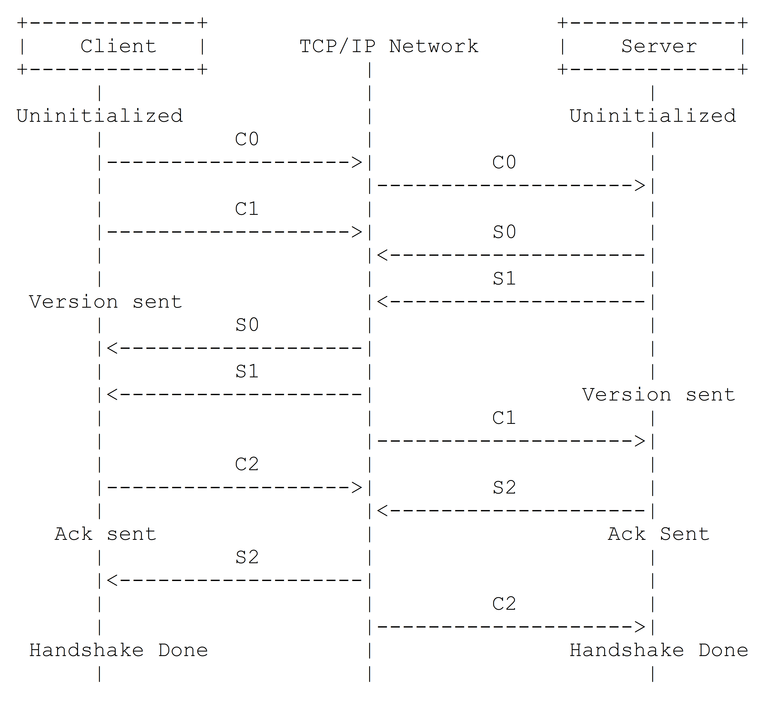
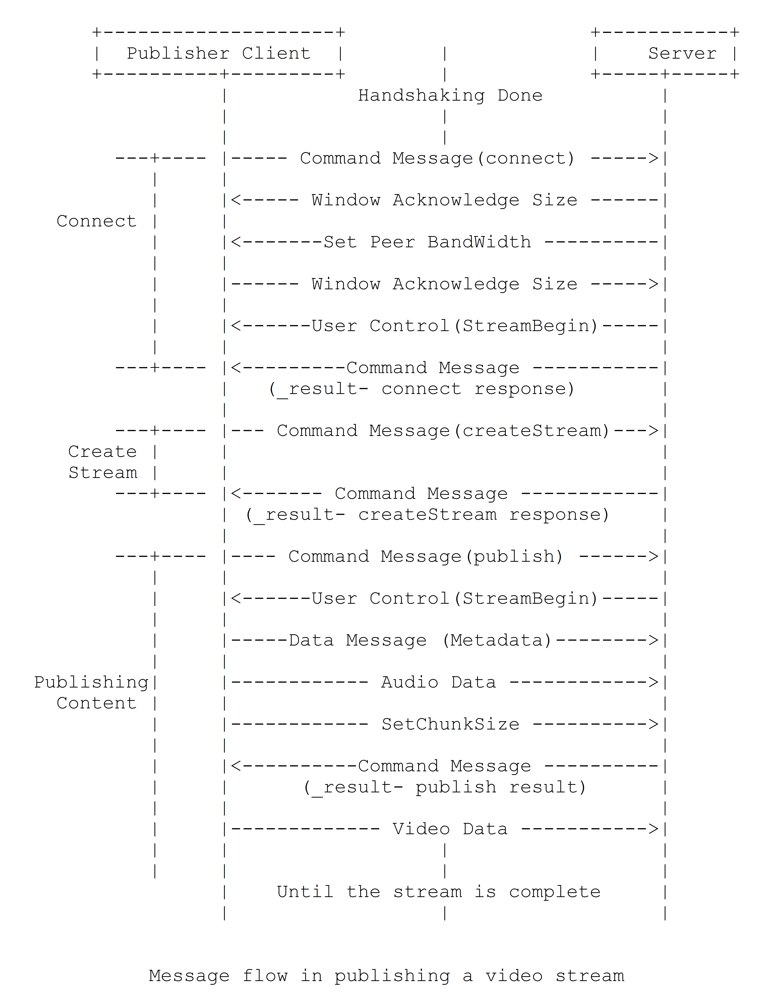
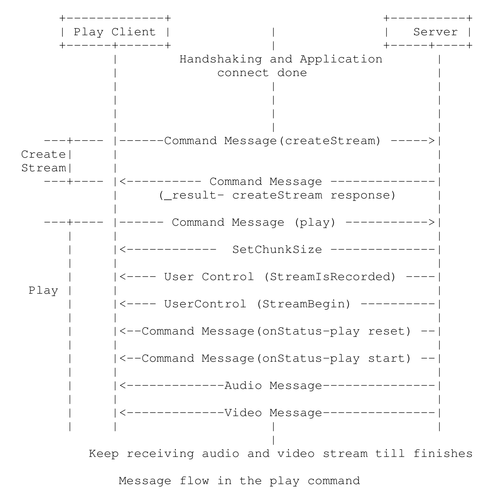

TMP是应用层协议，工作在TCP之上，默认端口1935，需要TCP特性来保证消息传输的可靠性。TCP通过三次握手成功建立连接后，RTMP协议还需要客户端和服务端通过RTMP握手协议来建立RTMP Connection，用来协商RTMP版本及进行时间对齐。RTMP Connection上会传输RTMP控制信息，比如SetChunkSize,SetACKWindowSize，CreateStream等。其中CreateStream命令会创建一个Stream链接，用于传输具体的音视频数据和控制这些信息传输的命令信息。RTMP协议以RTMP Message格式传输，为了更好地实现多路复用、分包和信息的公平性，发送端把Message划分为带有MessageID的Chunk，每个Chunk可能是一个单独的Message，也可能是Message的一部分，在接受端会根据chunk中包含的data的长度，messageid和message的长度把chunk还原成完整的Message，从而实现信息的收发。
握手

C和S都要发送大小固定的3个数据块，满足关系为：
- 客户端发送C0 和 C1 开始
- C/S的第2个包都要收到对方第1个包才能发送
- C/S都收到对方的第3个包握手完成
S收到C0或C1中任意一个就可以向C发送S0和S1了，但是只有在收到了C1才能发送S2。实际中为了保证握手的身份验证功能的基础上尽量减少通信的次数，一般是：
- C同时发送C0和C1
- S收到C1后同时发送S0+S1+S2
- C收到S2之后向S发送C2
C0和S0长度一个字节，表示分别表示各自的RTMP版本号，规范最新定义为3，版本号不一致可能终止交互或者降级。
C1/S1长度为1536字节。4字节时间戳，用于C/S发送所有后续块的时间起点,可以从0开始，或者其他值，主要用于多路流传输的时间同步。4字节零值，实际传输协议中并未对此进行校验，没啥意义，不为零也可正常传输。1528字节随机数据，用于区分出其响应C2/S2来自此RTMP连接发起的握手还是其他方发起的握手
C2/S2长度为1536字节。4字节时间戳是对方C1/S1发来的时间戳，4字节是字节当前的时间戳。1528字节随机数据回显必须是对方发来的C1/S1包里携带的随机数据，比如服务端回复的S2中是C1的1528字节随机数据。
数据传输过程

流程如上图所示。
建立连接
- C发送命令消息中的连接，请求建立连接
- S收到C请求后，发送确认窗口大小(Window Acknowledgement Size)协议消息，同时连接到C请求的应用程序
- S发送设置带宽协议消息，限制C的输出带宽
- C处理设置带宽协议消息后，发送确认窗口大小(Window Acknowledgement Size)协议消息
- S发送控制消息中的流开始（Stream Begin）
- S发送命令消息中的结果(_result)，通知客户端连接的状态
建立网络流
- C发送命令消息中的创建流（createStream）
- S发送命令消息中的“结果”(_result)，通知客户端网络流的状态
推流端推流
- C发送命令消息（publish）表示开始向S推流
- S发送控制消息流开始（StreamBegin）表示准备好接受
- C发送数据消息（Metadata），传递视频名、分辨率等元数据
- C发送音频数据
- C发送设置的chunk size
- S发送命令消息中的结果(_result)，通知客户端网络流的状态
C发送视频数据
…
播放端拉流

- C发送发送命令消息播放play
- S发送传输的chunk的大小
S发送用户控制协议（StreamIsRecorded）通知是否录制流
S发送控制消息流开始（StreamBegin）表示开始发送
- S发送命令消息onStatus-play reset，通知流当前状态刷新
- S发送命令消息onStatus-play start，通知流当前可以开始播放
- 发送音视频数据
RTMP分块
RTMP 传输的数据称为Message，包含音视频数据和信令，传输时把Message拆分成Chunk一个一个发送，每个Chunk中带有msid代表所属Message，接受端根据这个id将chunk组装成Message。Chunk默认大小是 128 字节，可通过控制消息Set Chunk Size设置Chunk的最大值，发送端和接受端各自维护一个自己Chunk Size表示发送Chunk的最大值。每个Chunk由块基本头chunk Basic Header（1-3字节）、块消息头chunk Message Header（0, 3, 7, 11字节）、块扩展时间戳Extended Timestamp（0/4字节）和块载荷Chunk Data。Basic Header里边有csid，Message Header里边有msid。csid进行区分的，是某个时间点可能传输的所有并行数据流，可以理解为特定时间点的一种广度。msid区分的，是时间上的连续数据，可以理解为时间顺序上的一种深度。
1 | +--------------+----------------+--------------------+--------------+ |
块基本头Basic Header
Basic Header字段可以是1，2或3字节，包含chunk type(fmt)和chunk stream id（cs id）。fmt定义message header的格式类型。Basic Header大小由cs id决定。协议支持到65597，streamid的范围是3-65599。cs id中0，1，2是保留的，用来表示basic header用几个字节表示。0定义id为两个字节，1定义3个字节。2表示底层协议的控制消息和命令。
1个字节时候，后6个比特表示csid，范围为0-63，其中的0，1，2是保留的。
1 | 0 1 2 3 4 5 6 7 |
2个字节的时候，cs id中的0表示2字节的Basic Header，第二个字节的8bit组成cs id，8bit数字的范围为0-255，加上1字节中6个bit的64个cs id，所以2字节的cs id为64-319。
1 | 0 1 |
3个字节的时候，cs id中的1表示3字节的Basic Header.第2，3个字节的16bit组成cs id，16bit表示的数字的范围为0-65535，加上1字节时候的64个cs id，所以3字节basic header能够表示的cs id范围为3-65599共65597个。
1 |
|
块消息头Message Header
Message Header包含了要发送的实际信息（可能是完整的，也可能是一部分）的描述信息，格式由basic header中的fmt字段定义。fmt用2bit表示，分别表示11，7，3，0字节共4种类型的Message Header。第一种格式可以表示其他三种表示的所有数据，但其他三种格式是基于对之前chunk的差量化的表示，可以更简洁地表示相同的数据，实际使用应该采用尽量少的字节表示相同意义的数据。
Type 0长11字节，必须是在chunk stream的最开始或者每次当chunk stream的时间戳后退的时候（例如向后拖动的操作）使用
1 | 0 1 2 3 |
timestamp (3 bytes): 对于type-0的chunk，消息使用绝对时间戳。时间戳最大0xFFFFFF，大于等于0xFFFFF时候取0xFFFFF，并且设置扩展时间戳Extended Timestamp来一起表示32位的时间戳。接受端会判断timestamp值为0xFFFFFF时取出Extended timestamp中数据解析实际的时间戳
message length（3 bytes）：表示实际发送的消息的数据长，如音频帧、视频帧等数据的长度，这里是Message的长度，也就是chunk属于的Message的总数据长度，而不是chunk本身Data的数据的长度
message type id(1 byte)：消息的类型id，表示实际发送的数据的类型，如8代表音频数据、9代表视频数据。
msg stream id(4 bytes)：表示该chunk所在的流的ID，采用小端存储
Type 1 占7字节。不包含4字节的message stream ID，表示此chunk和上一次发的chunk所在的流相同，在发送端只和对端有一个流链接的时候可以尽量去采取这种格式。
1 | 0 1 2 3 |
Type 2长3字节。与前一个chunk有相同的msg stream id和msg length。传输固定大小消息的流(如音频数据格式)，应该用这个类型，作为第二个stream的chunk报文。
1 | 0 1 2 |
type 3 表示这个chunk的msg Header和上一个完全相同。一条msg被分割成多个chunk，除了第1个chunk，剩下所有的chunk都应该用type 3。
扩展时间戳Extended Timestamp
type 0的timestamp或者type 1，type 2的timestamp delta不能够用24bit即3字节来表示，最近的type 0,1,2的chunk这个字段有值的时候，type 3的也应该有值。
实际数据消息
实际应用中遵循使用数最少的原则
一条msg一个chunk
4条固定的msg，每个msg都不需要分chunk，所以一条msg一个chunk。长度相等，可以假设csid=3是一条音频流。
csid=3所以每个chunk的Basic Header都只需要1字节。
msid, msg typeID, msg length都相等。第一个chunk可以是type 0的msg header，11字节。后边的chunk的timestamp delta都是固定的20，所以第二个chunk可以是type 2的msg header。再后边两个chunk所有的数据都是重复的，使用type 3的msg header。
时间戳1000不需要进行扩展，所以Extended Timestamp占0字节。
综上，第1个chunk，需要为1+11+32共44字节。第2个chunk，需要1+3+32共36字节。第3/4个chunk，需要1+32共33字节。
一条msg多个chunk
1条msg大于128就需要分成128大小的块。假设csid=4是一个视频，所以每个chunk的Basic Header都只需要1字节。
这里是一个msg分成多个chunk，所以chunk的Message Header部分都是相同的，只需要第一个chunk用type 0的Message Header，剩下的可以都只用type 3的。时间戳1000不需要进行扩展，所以Extended Timestamp占0字节。
综上，307字节的msg共分成3个chunk。第一个chunk，需要1+11+128共140字节。第二个chunk，需要1+128共129字节。第三个chunk，需要1+51共52字节。
MSG格式
RTMP消息由消息头和负载组成。RTMP消息的头（RTMP Message Header，不是chunk头中的 Message Header，两个不是同一个东西）有自己的统一格式，这部分也会被切割到 Chunk 里传输的，但是实际意义和 Chunk Header 内容重复，当前主流流媒体服务器在发送RTMP消息时，chunk data中不包含RTMP Message Header，只要双方约定好即可。
msg 头格式如下，除了msg type，剩下3种类型数据都用大端字节序
1 | 0 1 2 3 |
msg type中的1，2，3，5，6是协议控制消息，4是用户控制消息。8-9用于传输音视频数据，15-20的消息用于发送AMF编码的命令，负责用户与服务器之间的交互，比如播放，暂停剩下
协议控制消息
协议控制消息msid必须为0，且csid必须为2。协议控制消息在收到后需要即刻处理，时间戳可以忽略。
设置块大小消息（Message Type=1）。chunk size最大值默认128字节，这个控制消息可以修改chunk最大块大小并通知对方。chunk size最大值每个方向独立维护。设置块大小消息载荷格式如下：
1 | 0 1 2 3 |
规定第一位必须为0，chunk size 31比特是新的最大块大小值，接下来的chunk都以这个chunk size作为有效尺寸发送，直到新的Set Chunk Size消息过来。
终止消息（Message Type=2），负载是csid。用于通知对端，如果正在等待一条消息的部分块(已经接收了一部分)，那么可以丢弃之前已经接收到的块。对端将接收到的csid作为当前协议控制消息的有效负载。应用程序应该在关闭的时候发送这个消息，表示不需要进一步对这个消息的处理了。终止消息载荷为4字节的csid，该csid已经被接收的消息会被丢齐。
确认消息（Message Type=3）。客户端或者服务器在接收到等同于窗口大小的字节之后必须发送给对端一个确认消息。窗口大小是指发送者在没有收到接收者确认消息之前发送的最大字节数。这个消息定义了序列号，也就是到目前为止接收到的字节数。确认消息载荷为4字节的目前为止接收到的字节数（sequence number）。
确认窗口大小消息（Message Type=5）。客户端或服务端发送本消息来通知对方发送确认消息的窗口大小。例如，服务端希望每当发送的字节数等于窗口大小时从客户端收到确认。服务端在成功处理了客户端的连接请求后向客户端更新窗口大小。确认窗口大小消息载荷为4字节的确认窗口的大小。
- 设置对端带宽消息（Message Type=6）。客户端或服务端发送这个消息限制等端的发送带宽。如果这个消息与上一次对端发送过来的大小不一样，需要发送一个确认窗口大小消息。
1 | 0 1 2 3 |
Limit Type的类型：
- 0 - Hard: 对端必须按提供的带宽发送数据
- 1 - Soft: 对端应该限制其出口带宽到消息中的window size，或限制效果更小的带宽。
- 2 - Dynamic: 如果前一个Limit Type是Hard，那么就认为这个消息类型是Hard，否则丢弃这个消息。
用户控制消息（Message Type=4）
用户控制消息包含RTMP流传输层所使用的信息。使用msid=0，csid=2发送。协议控制消息接收立即生效；解析时，时间戳字段被忽略。客户端或者服务器端发送这个消息来通知对端一些用户控制事件，消息承载事件类型和事件数据。
消息头两个字节是Event Type（实际中是0-7共8种事件），后面跟着Event Data。Event Data的size是可变的。这个消息是需要在rtmp chunk stream上传送的，chunk size最大值的最大值必须能够放下一个用户控制消息。